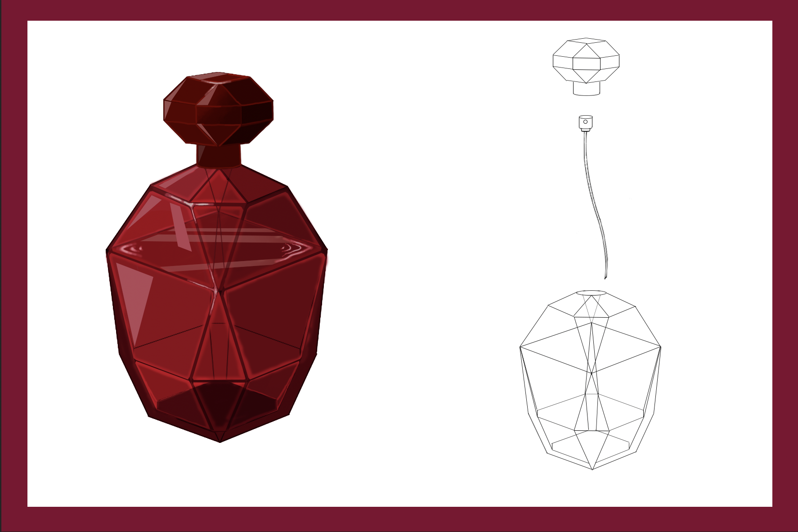
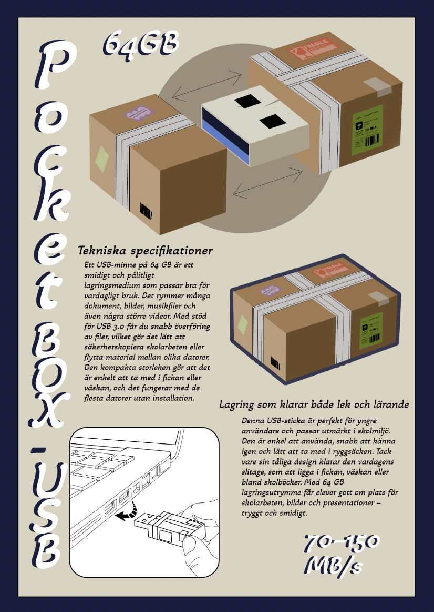
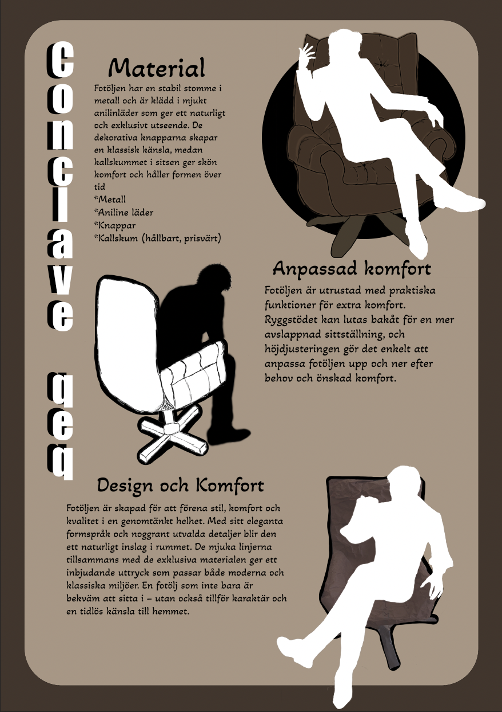

Jag är en kreativ och ganska lugn person som gillar att spela på fritiden. Jag tycker om design och att skapa saker, och gillar att hålla på med projekt där jag får använda min fantasi och komma på egna idéer. Jag trivs bäst i en trygg miljö och tycker om att spendera tid med personer jag känner väl.

Jag har designat en parfymflaska med en geometrisk och stilren form. Jag har fokuserat på flaskans utseende, form och detaljer genom att ta fram skisser och en färdig produktvisualisering. Jag valde en mörkröd färg för att ge flaskan ett exklusivt och elegant uttryck.
| Material | Hårdplast |
|---|---|

Jag har skapat ett USB-minne med namnet Pocket Box, där fokus har varit att kombinera praktisk funktion med en kreativ design. Jag har tagit fram produktens utseende och skapat en informationsposter som visar produktens funktioner, form och hur den används. Målet var att skapa ett litet och smidigt USB-minne med en unik förpackningsinspirerad design.

Jag har tillsammans med en grupp arbetat med att utveckla en fåtölj med fokus på design, komfort och funktion. Vi tog fram en design med en stabil metallstomme, anilinläder och dekorativa knappar för ett klassiskt och exklusivt utseende. Fåtöljen har även praktiska funktioner som lutningsbart ryggstöd och höjdjustering för att skapa en mer anpassningsbar sittupplevelse.